{width="3.0in" height="0.3541666666666667in"}
For a reversible reaction, the relative quantities of reactants and products at any point in time as a ratio of products to reactants
{width="4.802083333333333in" height="0.3541666666666667in"}
{width="5.666666666666667in" height="0.3541666666666667in"}
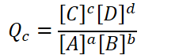{width="2.3541666666666665in" height="0.7291666666666666in"}
C and D are products, always go in the numerator
A and B are reactants, always go in the denominator
a, b, c, d: coefficients
A, B, C, D: chemical species
{width="3.8854166666666665in" height="0.3541666666666667in"}
Brackets => "concentration of" => molarity
For gas-phase reactions, the reaction quotient can be written in terms of pressures:
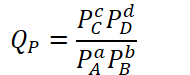{width="1.9791666666666667in" height="0.78125in"}
{width="3.3229166666666665in" height="0.3541666666666667in"}
Instead of concentrations, partial pressures are used (atm, torr, etc)
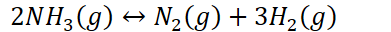{width="4.072916666666667in" height="0.3333333333333333in"}
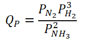{width="2.15625in" height="0.8229166666666666in"}
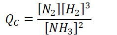{width="2.4791666666666665in" height="0.7395833333333334in"}
These two are different!
Solids and pure liquids (s, l) are NOT included in reaction quotient
Do not exert pressure or have concentrations
Only gases (g) and aqueous solutions (aq) are included
{width="5.90625in" height="0.3541666666666667in"}
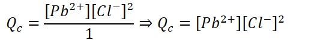{width="5.5in" height="0.6979166666666666in"}
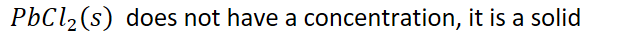{width="6.604166666666667in" height="0.3541666666666667in"}
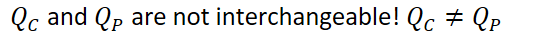{width="5.791666666666667in" height="0.3541666666666667in"}
Powers of 1 (coefficient 1) are understood and not written
{width="3.3333333333333335in" height="0.3541666666666667in"}
{width="9.875in" height="0.3541666666666667in"}
{width="5.666666666666667in" height="0.3541666666666667in"}
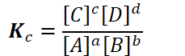{width="2.3854166666666665in" height="0.7291666666666666in"}
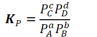{width="2.0208333333333335in" height="0.78125in"}
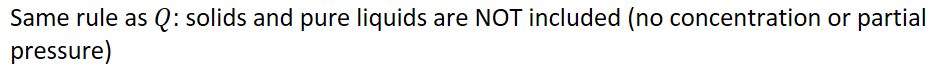{width="9.916666666666666in" height="0.6875in"}
{width="5.927083333333333in" height="0.3541666666666667in"}
Why both?
Q will tell us whether the reaction will need to proceed in the forward or reverse direction to reach equilibrium
K will tell us whether there are more products or reactants present at equilibrium